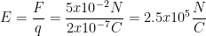
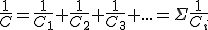

Ley de Coulomb
Cargas eléctricas
La carga eléctrica es una propiedad física intrínseca de algunas partículas subatómicas que se manifiesta mediante fuerzas de atracción y repulsión entre ellas a través de campos electromagnéticos. La materia cargada eléctricamente es influida por los campos electromagnéticos, siendo, a su vez, generadora de ellos. La denominada interacción electromagnética entre carga y campo eléctrico es una de las cuatro interacciones fundamentales de la física. Desde el punto de vista del modelo normal la carga eléctrica es una medida de la capacidad que posee una partícula para intercambiar fotones.
La carga eléctrica es de naturaleza discreta, fenómeno demostrado experimentalmente por Robert Millikan. Por razones históricas, a los electrones se les asignó carga negativa: –1, también expresada –e. Los protones tienen carga positiva: +1 o +e. A los quarks se les asigna carga fraccionaria: ±1/3 o ±2/3, aunque no se los ha podido observar libres en la naturaleza.
Unidades de medida
En el Sistema Internacional de Unidades la unidad de carga eléctrica se denomina culombio o coulomb (símbolo C o Coul). Se define como la cantidad de carga que pasa por la sección transversal de un conductor eléctrico en un segundo, cuando la corriente eléctrica es de un amperio. Desde la 26ª Conferencia General de Pesas y Medidas en el Sistema Internacional de Unidades la carga elemental se define como 1,602 176 634 × 10^-19 C, sin incertidumbre. Dado que la carga del electrón es de la misma magnitud que la del protón, pero negativa, se necesitan 6,241 509 074 460 763 × 10^18 electrones para reunir un culombio de carga negativa.
En el Sistema Cegesimal de Unidades (CGS) la carga eléctrica del electrón, es:
e = 4,8×10^-10 esu (electrostatic unit, esto es, unidad electrostática de carga) = 4,8×10^-10 statC
Características de las cargas eléctricas
Cada tipo de carga repele a las del mismo tipo y atrae a las del tipo opuesto: cargas del mismo signo se repelen y cargas de distinto signo se atraen (se podría decir que esta es la regla fundamental de la electrostática).
La carga eléctrica de un sistema se conserva. No existe creación o destrucción de carga eléctrica, solo se transfieren cargas, generalmente negativas, de un cuerpo a otro, siendo la carga total del sistema igual antes que después de la transferencia.
La carga eléctrica permite cuantificar el estado de electrización de los cuerpos, siendo su unidad mínima la carga del electrón (1,6 · 10^-19 C). Esto significa que la carga eléctrica q de un cuerpo está cuantizada y se puede expresar como n•e, en que n es un número entero (incluyendo el cero) y e es la carga del electrón.
En el SI la carga eléctrica se mide en coulomb (C) en honor al físico francés Charles Coulomb (1736-1806), quien estableció un modelo para describir la interacción entre cargas eléctricas. 1 C es la carga equivalente a la que producirían 6,24 · 10^18 electrones.
Propiedades de la carga
Ley de conservación de la carga
En concordancia con los resultados experimentales, el principio de conservación de la carga establece que no hay destrucción ni creación neta de carga eléctrica, y afirma que en todo proceso electromagnético la carga total de un sistema aislado se conserva.
En un proceso de electrización, el número total de protones y electrones no se altera, solo existe una separación de las cargas eléctricas. Por tanto, no hay destrucción ni creación de carga eléctrica, es decir, la carga total se conserva. Pueden aparecer cargas eléctricas donde antes no había, pero siempre lo harán de modo que la carga total del sistema permanezca constante. Además, esta conservación es local, ocurre en cualquier región del espacio por pequeña que sea.
Al igual que las otras leyes de conservación, la conservación de la carga eléctrica está asociada a una simetría del lagrangiano, llamada en física cuántica invariancia gauge. Así por el teorema de Noether a cada simetría del lagrangiano asociada a un grupo un paramétrico de transformaciones que dejan el lagrangiano invariante le corresponde una magnitud conservada. La conservación de la carga implica, al igual que la conservación de la masa, que en cada punto del espacio se satisface una ecuación de continuidad que relaciona la derivada de la densidad de carga eléctrica con la divergencia del vector densidad de corriente eléctrica, dicha ecuación expresa que el cambio neto en la densidad de carga dentro de un volumen prefijado es igual a la integral de la densidad de corriente eléctrica sobre la superficie que encierra el volumen, que a su vez es igual a la intensidad de corriente eléctrica:
-a / at fv pdV = fs J. d = I = a / at
La Ley de Coulomb
La Ley de Coulomb dice que "la fuerza electrostática entre dos cargas puntuales es proporcional al producto de las cargas e inversamente proporcional al cuadrado de la distancia que las separa, y tiene la dirección de la línea que las une. La fuerza es de repulsión si las cargas son de igual signo, y de atracción si son de signo contrario".
C. Coulomb fue el primero que estudio las fuerzas eléctricas, y llegó a a la conclusión:
La fuerza de repulsión o atracción de dos cuerpos con carga eléctrica disminuía con el cuadrado de las distancia.
Esta fuerza, defendía de la cantidad de carga eléctrica de los cuerpos y del medio donde se encontraban.
La fuerza con que se repelen o atraen dos cargas en reposo es igual al producto de las cargas dividido entre el cuadrado de la distancia que hay entre ellas, todo multiplicado por la constante del medio en que se encuentre.
F es el valor de la repulsión o atracción de las dos cargas. Su unidad es el newton (N o new).
K es la constante variable del medio. Si se trata del vacío.
q son las cargas que interactúan. Se miden en culombios (C o coul).
d se refiere a la distancia entre las q. Su unidad es el metro (m).
F = k · q1 · q2 / r2
Donde q1 y q2 representan las cargas de cada uno de los cuerpos; r es la distancia que los separa; k es la constante de proporcionalidad y tiene un valor igual a k = 8.99 · 10^9 Nm² / C².
Fórmula explicada de la ley de Coulomb
La fórmula vectorial de la ley de Coulomb se escribe de la siguiente forma:
Donde q1 y q2 son dos partículas cargadas;
F1 es la fuerza sobre la carga q2;
F2 es la fuerza que actúa sobre q1 que es igual y opuesta a F1;
e1-2 es el vector en la dirección de q2 a q1;
r1-2 es la distancia entre q1 y q2.
La fórmula resumida de la ley de Coulomb es la siguiente:
Los experimentos de Coulomb lo llevaron a demostrar que la fuerza eléctrica entre dos cargas es proporcional al inverso de la distancia al cuadrado 1/r^2. Esto significa que a una cierta distancia entre las cargas, estas experimentan una determinada fuerza eléctrica; si se duplica la distancia, la fuerza disminuirá 1/4.
También la fuerza entre las cargas depende directamente del producto de las mismas: q1 x q2. Así, mientras más grande la carga, mayor la fuerza. Como todas las fuerzas en física, la fuerza eléctrica es un vector y tiene por unidades el newton N.
Ejemplo de la ley de Coulomb
Si queremos calcular la fuerza eléctrica que ejerce el electrón y el protón de un átomo de hidrógeno, sabemos que la distancia que los separa (el radio del átomo de hidrógeno) es 0,053 nm. La carga de un electrón es -1,6 x 10^-19 C, mientras que la carga del protón es +1,6 x 10^-19 C.
Ejercicios de la ley de Coulomb
1. Calcule la fuerza que la carga q2 de -100 nC ejerce sobre otra carga q1 de +200 nC separadas por 5 cm.
Para utilizar la ley de Coulomb, debemos transformar las unidades a coulomb y metros:
Sustituimos los respectivos valores en la ecuación de la ley de Coulomb y usamos el valor de k=9,0 x 10^9 N.m^2/C^2.
Respuesta: la fuerza que ejerce q2 sobre q1 es igual a 0,072 N y es una fuerza de atracción, pues las cargas tienen signos opuestos.
2. Calcule la distancia necesaria entre dos cargas de -25nC y -75nC para mantener una fuerza de repulsión de 0,02 N.
En este caso tenemos que despejar la distancia r de la fórmula de la ley de Coulomb:
Sustituimos los valores en la ecuación despejada:
Respuesta: la separación entre las dos cargas debe ser 0,029 m = 2,9 cm.
Para más información, haga clic sobre los siguientes enlaces:
//n9.cl/gtl31
//n9.cl/aygp0
Campo eléctrico
Un campo eléctrico es un campo físico o región del espacio que interactúan con cargas eléctricas o cuerpos cargados mediante una fuerza eléctrica. Su representación por medio de un modelo describe el modo en que distintos cuerpos y sistemas de naturaleza eléctrica interactúan con él.
Dicho en términos físicos, es un campo vectorial en el cual una carga eléctrica determinada (q) sufre los efectos de una fuerza eléctrica (F).
Estos campos eléctricos pueden ser consecuencia de la presencia de cargas eléctricas, o bien de campos eléctricos variables, como lo demostraron los experimentos de los científicos británicos Michel Faraday y James C. Maxwell.
Por esa razón, los campos eléctricos, en las perspectivas físicas contemporáneas, se consideran junto a los campos magnéticos para formar campos electromagnéticos.
Así, un campo eléctrico es esa región del espacio que se ha visto modificada por la presencia de una carga eléctrica. Si esta carga es positiva, genera líneas de campo eléctrico que «nacen» en la carga y se extienden hacia fuera con dirección radial. Si, por el contrario, la carga es negativa, las líneas de campo «mueren» en la carga. Si se acerca una carga a la región del espacio donde existe un campo eléctrico, ésta experimentará una fuerza eléctrica con una dirección y sentido.
Unidades de campo eléctrico
Los campos eléctricos no son medibles directamente, con ningún tipo de aparato. Pero si es posible observar su efecto sobre una carga ubicada en sus inmediaciones, es decir, sí es posible medir la fuerza que actúa sobre la carga (intensidad). Para ello se emplean newton/coulomb (N/C).
Intensidad de campo eléctrico
La intensidad del campo eléctrico es una magnitud vectorial que representa la fuerza eléctrica F actuando sobre una carga determinada en una cantidad precisa de Newton/Coulomb (N/C). Esta magnitud suele denominarse sencillamente “campo eléctrico”, debido a que el campo en sí mismo no puede ser medido, sino su efecto sobre una carga determinada.
Para calcularla se utiliza la formula F = q · E tomando en cuenta que si la carga es positiva (q > 0), la fuerza eléctrica tendrá el mismo signo que el campo y q se moverá en el mismo sentido; mientras que si la carga es negativa (q < 0), ocurrirá todo al revés.
Características de campo eléctrico
Es invisible.
Es tridimensional, rodea a la carga.
Es una cantidad vectorial.
Tiene origen en las cargas eléctricas.
El campo producido por una carga puntual positiva apunta en una dirección que se aleja de la carga.
El campo producido por una carga puntual negativa apunta hacia la carga.
La intensidad del campo disminuye a medida que la distancia aumenta.
Líneas de campo eléctrico
Las líneas de campo eléctrico son líneas imaginarias que sirven para representar el campo eléctrico. Fue una idea presentada por el científico inglés Michael Faraday (1791-1867) para mostrar la noción de la intensidad y de la orientación del campo eléctrico.
Características de las líneas de campo eléctrico
Las líneas parten de las cargas positivas y apuntan a las cargas negativas.
No se cruzan.
A mayor densidad de las líneas de campo eléctrico mayor es la intensidad del campo eléctrico E.
Pueden ser rectas o curvas.
El número de líneas es igual a la carga sobre la constante de permisividad, q / ℇ0.
Fórmula de campo eléctrico
La magnitud del campo eléctrico producido por un campo de fuerza F sobre una carga de prueba q se obtiene mediante la siguiente fórmula matemática.
Donde:
F = Magnitud del campo de fuerza [N].
q = Carga de prueba [C].
E = Magnitud del campo eléctrico [N/C].
Otra forma de expresar la fórmula en términos de la distancia, es de la siguiente manera.
Dónde:
Ejercicios resueltos de campo eléctrico
Problema 1
Una carga de 5x10^-6 C se introduce a una región donde actúa un campo de fuerza de 0.04N. ¿Cuál es la intensidad del campo eléctrico en esa región?
Solución
Para poder solucionar este problema, basta con sustituir los valores arrojados en el mismo problema, por ejemplo tenemos el valor de la carga y también el valor de la fuerza que actúa sobre ese campo:

Ahora reemplazaremos estos datos en nuestra fórmula
Eso es lo que se generaría en la región donde actúa dicha fuerza sobre las cargas. Ahora veamos otro ejemplo con algunos incisos para entender por completo este tema.
Problema 2
Dada la imagen, y asumiendo que se coloca una carga q = 2x10^-7 C, y en ella actúa una fuerza F= 5x10^-2N, ¿Cuál es entonces, la intensidad del campo en P?
Solución
La imagen a la que se refiere el problema, es la que aparece justamente debajo.
Para poder solucionar el problema, basta nuevamente en colocar nuestros datos en la fórmula.

Para más información, haga clic sobre los siguientes enlaces:
//n9.cl/b4kor8
//n9.cl/m3p3f
//n9.cl/h0512
Diferencia de potencial
La diferencia de potencial eléctrico entre los puntos A y B, VB−VA, se define como el cambio de energía potencial de una carga q desplazada de A hacia B, dividido entre la carga. Las unidades de diferencia de potencial son julios por culombio, y Alessandro Volta les dio el nombre de voltios (V).
1V = 1J / C
El conocido término voltaje es el nombre común de la diferencia de potencial eléctrico. Tenga en cuenta que siempre que se cita un voltaje, se entiende que es la diferencia de potencial entre dos puntos. Por ejemplo, toda batería tiene dos terminales y su voltaje es la diferencia de potencial entre ellos. Más fundamentalmente, el punto que elige como cero voltios es arbitrario. Esto es análogo al hecho de que la energía potencial gravitacional tiene un cero arbitrario, como el nivel del mar o quizás el suelo de una sala de conferencias. Conviene subrayar la distinción entre diferencia de potencial y energía potencial eléctrica.
Voltaje no es lo mismo que energía. El voltaje es la energía por unidad de carga. Por lo tanto, una batería de motocicleta y una de automóvil pueden tener el mismo voltaje (más exactamente, la misma diferencia de potencial entre los terminales de la batería) y, sin embargo, una almacena mucha más energía que la otra porque ΔU=qΔV.Δ. La batería del automóvil puede mover más carga que la de la motocicleta, aunque ambas son baterías de 12 V.
Potencial eléctrico
Una carga eléctrica situada dentro de un campo eléctrico tendrá una energía potencial eléctrica, pues la fuerza que ejerce el campo es capaz de realizar un trabajo al mover la carga.
Un Potencial es Positivo si al conectar un cuerpo a tierra, por medio de un conductor eléctrico, los electrones fluyen desde el suelo al cuerpo; y será Negativo si al conectarlo a tierra los electrones fluyen en dirección opuesta.
El Potencial Eléctrico V en cualquier punto de un campo eléctrico es igual al trabajo T que se necesita realizar para transportar a la unidad de carga positiva q desde el Potencial cero hasta el punto considerado. Por lo tanto:
V = T / q
Donde:
V = Potencial eléctrico en el punto considerado medido en Volts (V).
T = Trabajo realizado en Joules (J).
q = carga transportada en Coulombs (C).
El Potencial Eléctrico es una magnitud escalar, y se define también como la Energía Potencial que tiene la unidad de Carga Eléctrica Positiva en un punto determinado, y se representa:
V = Ep / q
Donde:
V = Potencial Eléctrico en Volts (V).
Ep = Energía Potencial en Joules (J).
q = carga eléctrica en Coulombs (C).
Fórmula de diferencia de potencial
Cuando tenemos dos cuerpos, uno con más carga que otro, y los conectamos mediante un conductor, fluirá la carga eléctrica del cuerpo con más carga al que tiene menos carga. Esta carga fluirá en forma de Corriente. Cuando esto sucede se dice que hay una Diferencia de Potencial entre los cuerpos.
La Diferencia de Potencial es lo que impulsa a las cargas a través del circuito. Al liberar una carga positiva en un campo eléctrico ésta se moverá hacia regiones de menor potencial eléctrico, si se liberan cargas negativas éstas se moverán hacia regiones de mayor potencial eléctrico. De acuerdo con esto, sólo cuando hay Diferencia de Potencial Eléctrico para cargas libres entre dos puntos, habrá corriente eléctrica.
La Diferencia de Potencial entre dos puntos cualesquiera A y B es igual al trabajo por unidad de carga positiva que realizan Fuerzas Eléctricas al mover una carga de prueba desde el punto A al B. Por tanto:
VAB = TAB / q
Donde:
VAB = Diferencia de Potencial entre los puntos A y B determinada en Volts (V).
TAB = Trabajo sobre una carga de prueba “q” que se desplaza de A a B, calculado en Joules (J).
q = Carga de prueba desplazada de A a B medida en Coulombs (C).
La Diferencia de Potencial entre dos puntos se puede calcular si se conoce el Potencial de cada uno y se obtiene su diferencia.
El trabajo realizado por la Fuerza Eléctrica para que la carga se mueva del punto A al B es independiente de la trayectoria seguida por la carga durante su desplazamiento.
La Diferencia de Potencial tiene muchas aplicaciones en la vida práctica, por ejemplo la Diferencia de Potencial entre dos polos de muchas pilas pequeñas es de aproximadamente 1.5V; la de algunas baterías es de 9V; en los acumuladores de los automóviles, generalmente es de 12V; entre los dos alambres de las instalaciones eléctricas de nuestras casas es 110V; entre dos de los cables que transmiten la energía eléctrica a grandes distancias es más de 100000 V.
Ejercicios resueltos de diferencia de potencial
1. Si se requieren 2.16 x 10^-5 Joules para mover una carga de 12 x 10^-9 Coulombs, ¿Cuál es el Potencial Eléctrico de esa carga?
V = T / q
V = (2.16 x 10^-5) / (12 x 10^-9)
V = 1800 Volts
2. Si se requieren 3.52 x 10^-5 Joules para mover una carga de 16 x 10^-9 Coulombs, ¿Cuál es el Potencial Eléctrico de esa carga?
V = T / q
V = (3.52 x 10^-5) / (16 x 10^-9)
V = 2200 Volts
Para más información, haga clic sobre los siguientes enlaces:
//n9.cl/fxduf
//n9.cl/yv61w
//n9.cl/39o1p
//n9.cl/jvhqm
Capacidad eléctrica
En electromagnetismo y la electricidad, la capacidad eléctrica, es la propiedad que tienen los cuerpos para mantener una carga eléctrica. La capacidad es también una medida de la cantidad de energía eléctrica almacenada para una diferencia de potencial eléctrico dada. El dispositivo más común que almacena energía de esta forma es el condensador. La relación entre la diferencia de potencial (o tensión) existente entre las placas del condensador y la carga eléctrica almacenada en este, se describe mediante la siguiente expresión matemática:
C = q / v
Donde:
C es la capacidad, medida en faradios (en honor al físico experimental Michael Faradio); esta unidad es relativamente grande y suelen utilizarse submúltiplos como el microfaradio o picofaradio.
q es la carga eléctrica almacenada, medida en culombios.
v es la diferencia de Potencial (o tensión), medida en voltio.
Cabe destacar que la capacidad es siempre una cantidad positiva y que depende de la geometría del condensador (de placas paralelas, cilíndrico, esférico). Otro factor del que depende es del dieléctrico que se introduzca entre las dos superficies del condensador. Cuanto mayor sea la constante dieléctrica del material no conductor introducido, mayor es la capacidad.
C = ε A / d
Donde:
C es la capacidad, en faradios;
A es el área de las placas, en metros cuadrados;
ε es la permitividad;
d es la separación entre las placas, en metros.
Unidades de capacidad eléctrica
La capacidad eléctrica de un conductor cargado y aislado es una magnitud que se mide por el cociente entre su carga y su potencial eléctrico.
Faradio = Coulomb / Voltio
El faradio, al igual que el culombio, se trata de una unidad muy grande por lo que es común que debamos trabajar con submúltiplos de esta. A continuación puedes encontrar algunos de los más utilizados:
Condensadores
Un condensador es un dispositivo constituido por dos conductores aislados próximos, con cargas iguales y de signo contrario, que permiten almacenar una gran cantidad de energía, y por consiguiente energía con un pequeño potencial. Los conductores que forman el condensador se llaman armaduras y según la forma de éstas los condensadores pueden ser planos, cilíndricos, esféricos, etc.
La cantidad de carga almacenada por un condensador es directamente proporcional a la diferencia de potencial que se haya establecido entre sus placas, pero puede ocurrir que dos condensadores de distinta forma o tamaño adquieran distinta carga cuando se someten a una misma diferencia de potencial. La capacidad del condensador es:

La representación y las unidades de capacidad de un condensador son las mismas que las correspondientes a la capacidad de un conductor.
Dieléctrico
Son aisladores, con una propiedad característica llamada constante dieléctrica k . Se le acredita Michael Faraday, el llevar a cabo el primer experimento que cuando un material aislante llena el espacio entre dos placas conductoras de un condensador el valor de la capacidad aumenta.
Si C0 es la capacidad en el vacío (o en el aire) de un condensador determinado, la capacidad , cuando se coloca un dieléctrico entre sus conductores es mayor que C0 por al que al factor se le da el nombre de constante dieléctrica:
k: C = K.C0
Condensador de láminas paralelas sin dieléctrico
El condensador más sencillo que existe se compone de dos láminas planas conductoras y paralelas A y B, con cargas iguales y de signo contrario, sin dieléctrico (entre las dos láminas o armaduras existe el vacío o el aire) separadas una distancia. Este tipo de condensador recibe el nombre de condensador plano.
Si VA y VB son los potenciales de las láminas y la intensidad del campo eléctrico entre ellas es de módulo E, la diferencia de potencial entre las láminas viene dada por:
VB - VA = E.d
Ejemplo de capacidad eléctrica
Una esfera conductora E1 posee una carga q1 = 0.8 C y una capacidad C1 = 15 mF. Otra esfera similar E2, posee una carga q2 = 0.8 C y una capacidad C2 = 10 mF. Si ambas se encuentran separadas para no interferir eléctricamente entre ellas y se conectan por medio de un hilo conductor de capacidad despreciable:
a) Determinar si existe desplazamiento de cargas en las esferas y en que sentido.
b) Determinar la carga de cada esfera una vez que se encuentren en equilibrio eléctrico.
Solución
Cuestión a)
Datos
q1 = 0.8 C
C1 = 15 · 10^-3 F
q2 = 0.8 C
C2 = 10 · 10^-3 F = 10^-2 F
Ambas esferas poseen el mismo exceso de carga positiva, sin embargo cada una de ellas tiene distinta capacidad. Sabemos que el desplazamiento de cargas positivas se realiza desde zonas de mayor potencial a menor potencial, por esta razón vamos a determinar el potencial eléctrico de cada una de las esferas.
Dado que la esfera E2 posee mayor potencial que E1, parte de sus cargas positivas se moverán hacia la esfera E1.
Cuestión b)
Las esferas alcanzarán el equilibro cuando ya no se muevan más cargas entre ellas y eso ocurrirá cuando el potencial de ambas sea el mismo, es decir, V1 = V2, o lo que es lo mismo ΔV = 0. Atendiendo a la definición de capacidad eléctrica:
Desconocemos el valor de q1 y q2, sin embargo según el principio de conservación de la carga, la carga que poseían las esferas antes de conectarse y después de conectarse debe ser la misma, es decir:
Resolviendo el sistema de ecuaciones que tenemos:
Para más información, haga clic sobre el siguiente enlace:
//n9.cl/m8yy6
//n9.cl/6qx6w
//n9.cl/hroyg
//n9.cl/bwwa5
Asociación de condensadores
Se pueden conectar varios condensadores entre sí para utilizarlos en diversas aplicaciones. Las conexiones múltiples de condensadores se comportan como un único condensador equivalente. La capacitancia total de este condensador único equivalente depende tanto de los condensadores individuales como de su conexión.
Los circuitos a veces contienen dos o más condensadores asociados, ya sea para hacer la función de uno solo o por exigencias del circuito eléctrico.
Existen tres tipos de asociaciones de condensadores:
En paralelo.
En serie.
En forma mixta.
El condensador resultante de la asociación recibirá el nombre de condensador equivalente, produciendo por tanto el mismo efecto que dicha asociación, es decir misma carga y diferencia de potencial, y a su capacidad la denominaremos capacidad equivalente o capacidad total.
Condensadores en paralelo
Es la que resulta de conectar entre sí armaduras del mismo signo, uniendo por un lado todas las armaduras inductoras (armaduras cargadas negativamente, es decir electrones), y por otro todas las armaduras inducidas (armaduras cargadas positivamente, formadas por huecos debidos a la ausencia de electrones).
En una asociación de condensadores en paralelo la capacidad equivalente es igual a la suma de las capacidades de los condensadores asociados.
Condensadores en serie
Es el resultado de conectar los condensadores uno a continuación de otro, es decir, se une la armadura inducida de cada condensador con la inductora de la siguiente, y así sucesivamente.
En una asociación de condensadores en serie, la inversa de la capacidad equivalente es igual a la suma de las inversas de las capacidades de los condensadores asociados.

Condensadores en circuito mixto
Es una asociación compleja constituida por asociaciones sencillas, es decir, la que resulta de unir en paralelo varias asociaciones de condensadores en serie, o en serie varias asociaciones en paralelo. Para calcular su capacidad equivalente, primero hallaremos la capacidad equivalente de los condensadores en paralelo (sumándolas aritméticamente) para después combinarla con las capacidades de los que estén en serie (inversa de la suma de las inversas).
Para más información, haga clic sobre el siguiente enlace: //n9.cl/k7muw
Corriente eléctrica
De forma general, la corriente eléctrica es el flujo neto de carga eléctrica que circula de forma ordenada por un medio material conductor. Dicho medio material puede ser sólido, líquido o gaseoso y las cargas son transportadas por el movimiento de electrones o iones. Más concretamente:
En los sólidos se mueven los electrones.
En los líquidos los iones.
Y en los gases, los iones o electrones.
Aunque esto es así, el caso más general de corriente eléctrica es el que se produce por el movimiento de los electrones dentro de un conductor, así que suele reservarse este término para este caso en concreto.
La corriente eléctrica es el flujo de electrones entre dos puntos de un conductor que se encuentran a distinto potencial eléctrico.
Tal y como estudiamos en el apartado del movimiento de cargas en el seno de un campo eléctrico, los electrones se mueven desde zonas de menor potencial eléctrico a mayor potencial eléctrico. A medida que los electrones se desplazan, el potencial en ambas zonas tiende a igualarse y poco a poco el movimiento de los electrones se detiene. Por esta razón, si deseamos mantener una corriente eléctrica constante es necesario hacer uso de un dispositivo que permita una diferencia de potencial o tensión constante denominado generador de corriente.
Tipos de corriente eléctrica
Dependiendo de la temporalidad del sentido de la corriente eléctrica podemos distinguir dos tipos:
Corriente continua (C.C.): El flujo de electrones se produce siempre en el mismo sentido.
Corriente alterna (C.A.): El sentido de circulación de los electrones cambia de forma periódica.
A lo largo de este tema nos centraremos únicamente en la corriente continua.
Efectos de la corriente eléctrica
De forma general, la corriente eléctrica produce tres tipos de efectos:
Efectos caloríficos: Cuando circula una corriente eléctrica por un conductor, este aumenta su temperatura. Este efecto es utilizado en estufas, hornillos, etc.
Efectos químicos: Si la corriente eléctrica circula por un conductor iónico, dicha corriente es capaz de producir un cambio químico en él. Este efecto es utilizado en la electrólisis.
Efectos magnéticos: El paso de la corriente eléctrica a través de un conductor crea un campo magnético similar al que produce un imán. Este efecto es el fundamento de motores eléctricos, dispositivos de televisión, radio, amperímetros, voltímetros, etc.
¿Cómo funciona la corriente eléctrica?
La corriente eléctrica funciona a partir de un movimiento de partículas, que comienza en el momento en el que a uno de los extremos del conductor se le aplica una tensión externa que, a su vez, genera un campo eléctrico sobre los electrones de carga negativa que se ven atraídos hacia la terminal positiva de la tensión externa.
Para que la corriente pueda transmitirse de un punto a otro, demanda materiales con alta cantidad de electrones libres, que se encuentran ubicados en la última orbita de su núcleo, lo que significa que son altamente susceptibles a moverse al estar menos atraídos por la fuerza de su núcleo.
Fórmulas
Intensidad de la corriente eléctrica
Es la carga que pasa por la sección transversal de un conductor en cada unidad de tiempo. Para su cálculo:
I = q / t
Donde:
I = Intensidad [Amperaje].
q = Carga [Coul].
t = Tiempo [Segundos].
La unidad de la intensidad se obtiene dividiendo la unidad de la carga entre una unidad de tiempo.
El amperio es la unidad de la intensidad de la corriente eléctrica, y se define como la intensidad de la corriente eléctrica cuando por la sección transversal de un conductor pasa la carga de un coul por cada segundo.
Resistencia de un conductor (Ley de Ohm)
La resistencia de un conductor es directamente proporcional en sus extremos e inversamente proporcional a la intensidad que pasa por el circuito. Para su cálculo, utilizamos la siguiente fórmula:
R = V / I
Donde:
R = Resistencia del conductor.
V = Potencial en sus extremos.
I = Intensidad que pasa por la resistencia.
El ohmio es la unidad de la resistencia y se define como la resistencia de un conductor que tiene en sus extremos una diferencia de potencial de un voltio cuando la atraviesa una intensidad de un amperio.
Experimentalmente se comprueba que la resistencia de un conductor de sección constante (un alambre) a temperatura constante es:
Directamente proporcional a la longitud.
Inversamente proporcional al área de la sección transversal.
Depende de la naturaleza del conductor.
Para su cálculo, aplicamos la siguiente fórmula:
R = ρ · L / S
Donde:
R = Resistencia del conductor.
ρ = Coeficiente de la resistividad o resistencia específica.
L = Longitud.
S = Sección.
Variación de la resistencia con la temperatura
En los conductores de primera clase (metales, carbón y otros) la resistencia aumenta con la temperatura.
En los conductores de segunda clase (disoluciones) la resistencia disminuye con la temperatura.
Para estos cálculos, aplicamos la siguiente fórmula:
R2 = R1 [1 ± α (T2 - T1)]
Donde:
R1 y T1 = Resistencia y temperatura 1.
R2 y T2 = Resistencia y temperatura 2.
α = Coeficiente de la temperatura.
Energía de la corriente eléctrica
Es el trabajo que la corriente puede realizar.
Su cálculo se realiza con las siguientes fórmulas:
W = P · T
W = V · I · T
W = I^2 · R · T
W = V^2 · T / R
W = Energía de la corriente eléctrica [Joules].
P = Potencia eléctrica [Vatios].
V = Diferencia de potencial [Voltios].
T = Tiempo [Segundos].
I = Intensidad [Amperios].
R = Resistencia [Ohmios].
Potencia eléctrica
Es la energía suministrada por el generador por cada unidad de tiempo. Para su cálculo aplicamos 3 fórmulas:
P = V · I
P = I^2 · R
P = V^2 / R
P = Potencia eléctrica.
Ley de Joule
Esta ley indica que la cantidad de calor desprendida por una corriente eléctrica, que atraviesa a un conductor, es directamente proporcional al cuadrado de la intensidad a la resistencia del conductor y al tiempo. Para su cálculo se aplican las siguientes fórmulas:
Q = 0,24 · I^2 · R · T
Q = 0,24 · W
Q = 0,24 · P · T
Q = 0,24 · V · I · T
Donde:
Q = Cantidad de calor desprendida por el conductor [Calorías].
0,24 = Equivalente eléctrico del trabajo.
1 Joule = 0,24 caloriagramos.
Para más información, haga clic sobre los siguientes enlaces:
//n9.cl/jk2m6
//n9.cl/yw7dt
//n9.cl/d2sud
//n9.cl/yvjm6
//n9.cl/px6ie
//n9.cl/v9g2j1
Asociación de resistencias
Tal y como vimos en apartados anteriores, en los circuitos eléctricos suelen emplearse unos dispositivos que se oponen al paso de la corriente eléctrica de una forma más pronunciada de lo normal. Estos dispositivos reciben el nombre de resistencias y pueden asociarse de tal forma que en conjunto equivalgan al valor de otra resistencia, llamada resistencia equivalente.
Se denomina resistencia resultante o equivalente, al valor de la resistencia que se obtiene al asociar un conjunto de ellas.
Principalmente las resistencias se pueden asociar en serie, paralelo o una combinación de ambas llamadas mixta.
Resistencias en serie
En un circuito en serie, la resistencia total equivale a la suma de todas las resistencias. La misma corriente es la que pasa a través de cada resistor, por lo tanto, cada resistor hace su trabajo como es de esperarse. Por ejemplo, supón que un circuito en serie tiene un resistor de 2 Ω (ohmios), un resistor de 5 Ω y un resistor de 7 Ω. La resistencia total de ese circuito será 2 + 5 + 7 = 14 Ω.
RT = R1 + R2 + R3 ... + Rn
Una asociación en serie de n resistencias R1, R2, R3, ..., Rn es equivalente a poner una única resistencia cuyo valor R es igual a la suma del valor de las n resistencias.
Resistencia en paralelo
Si un circuito tiene resistores en el camino principal (antes o después de las ramificaciones), o si hay dos o más resistencias en una sola rama, omite los próximos pasos y lee las instrucciones de la sección de circuitos combinados.
Debido a que cada resistor solo ralentiza la corriente que pasa a través de una rama, solo tendrá un pequeño efecto en la resistencia total del circuito. La fórmula de la resistencia total RT es R1, R2, R3, ... Donde R1 es la resistencia de la primera rama, R2 es la resistencia de la segunda rama, y así sucesivamente hasta la última rama Rn.
Resistencias mixtas
Un circuito combinado tiene algunos componentes vinculados en serie (uno después del otro) y en paralelo (distintas ramas). Busca las áreas del diagrama para separarlas en una sola sección del circuito, ya sea en serie o en paralelo. Enciérralas en un círculo para no perderles el rastro. Por ejemplo, supón que un circuito tiene un resistor de 1 Ω y uno de 1,5 Ω conectados en serie. Después del segundo resistor, el circuito se divide en dos ramas paralelas, una con un resistor de 5 Ω y la otra con un resistor de 3 Ω. Encierra en un círculo las dos ramas paralelas para separarlas del resto del circuito.
Una vez que hayas encontrado la resistencia total de una sección en paralelo, puedes tachar toda esa sección del diagrama. Trata esa área como si fuera un solo cable con una resistencia igual al valor que acabas de obtener. En el ejemplo anterior, puedes ignorar las dos ramas y tratarlas como un solo resistor con una resistencia de 1,875 Ω.
Una vez que hayas reemplazado cada sección en paralelo con una sola resistencia, tu diagrama deberá ser solo un bucle, esto es, un circuito en serie. La resistencia total de un circuito en serie equivale a la suma de todas las resistencias individuales, así que súmalas para obtener la respuesta. El diagrama simplificado tiene un resistor de 1 Ω, un resistor de 1,5 Ω y la sección de 1,875 Ω que acabas de calcular. Todas estas secciones están conectadas en serie, por lo tanto RT: 1 + 1,5 + 1.85 = 4,375 Ω.
Para más información, haga clic sobre los siguientes enlaces:
//n9.cl/uol0k
//n9.cl/a712hy
//n9.cl/gkbtj
Ley de Ohm
La ley de Ohm establece que la corriente que pasa por los conductores es proporcional al voltaje aplicado en ellos.
El físico alemán Georg Simón Ohm (1787-1854) fue el primero en demostrar experimentalmente la relación entre los conductores eléctricos y su resistencia.
Ohm descubrió al principio del siglo XIX que la corriente a través de un metal era directamente proporcional al voltaje o diferencia de potencial eléctrico por el metal, tal como lo expresa su enunciado. El descubrimiento de Ohm condujo a la idea de la resistencia en los circuitos.
Fórmula de la ley de Ohm
La ley de Ohm expresada en forma de ecuación es:
V = I · R
Donde:
V = Potencial eléctrico en voltios.
I = Intensidad de corriente en amperios.
R = Resistencia en ohmios.

En serie
Las ecuaciones en serie son las siguientes:
VT = V1 + V2 + V3 ... + Vn
IT = I1 = I2 = ... In
RT = R1 + R2 + R3 ... + Rn
Bien, ahora el siguiente gráfico muestra un circuito en serie con sólo un par de valores dados. Utilizando las ecuaciones de la serie anterior, junto con la ley de Ohm, podemos resolver todos los valores.
El siguiente gráfico muestra la tabla rellena con todos los valores correctos. Comencemos agregando la resistencia para obtener el total de 8.1 KΩ. Ya que tenemos también la tensión total de 12 V, podemos resolver para el total de corriente de la siguiente manera: (12 V)/(8100 Ω) = 0.00148 A o 1.48 mA. Esta corriente es la misma en todo el circuito porque todo se encuentra en serie. Ahora que tenemos todos los valores de corriente y todos los valores de resistencia, podemos resolver los totales de voltaje mediante V = I x R. Para resolver la potencia (P), utilizamos P = I · V.

En paralelo
Ahora repasemos las ecuaciones para un circuito en paralelo:
VT = V1 = V2 = ... Vn
IT = I1 + I2 + I3 ... + In
¿Qué ha cambiado? En un circuito en paralelo la tensión total es igual a la tensión en cada línea del circuito en paralelo. La corriente se suma para obtener el total. Las ecuaciones de resistencia y capacitancia son conmutadas.
A continuación se encuentra un gráfico de un circuito en paralelo con unos valores dados. Usando las ecuaciones paralelas anteriores, junto con la ley de Ohm, podemos resolver todos los valores.
El siguiente gráfico es una tabla con todos los valores correctos rellenados. Hasta ahora sabemos que la tensión es de 10 V, por lo que lo hemos añadido en toda la placa. A continuación podemos averiguar la resistencia total de la siguiente manera: 1 / (330 Ω) + 1 / (1200 Ω) + 1 / (4700 Ω) + 1 / (6800 Ω) = 0.0042234/Ω. Entonces tomamos el recíproco de ese total y obtenemos 236.96 Ω. Para rellenar el resto de la placa, podemos utilizar la ley de Ohm. I = V / R nos dará cada total de corriente. A continuación, utilizamos P = I · V de nuevo para los valores de potencia.
Para más información, haga clic sobre los siguientes enlaces:
//n9.cl/h9pkc
//n9.cl/wuwmo
Redes eléctricas
Son circuito eléctricos formados por resistencia en serie o en paralelo, generadores, motores, etc.
Nudo o nodo
Es el punto de la red donde concurren tres o más conductores.
Rama o ramal
Es la parte de la red por la que circula la misma intensidad.
Malla
Es todo circuito cerrado, es decir, que empieza y termina en el mismo nudo.
Leyes de Kirchhoff
Son dos leyes que se utilizan para la resolución de redes eléctricas, la ley de los nudos y la ley de las mallas.
En redes eléctricas de corriente continua las leyes de Kirchhoff son utilizadas para resolver el problema de la distribución real de la corriente y por tanto el estado de la red. En este artículo se demuestra rigurosamente, que, conociendo las resistencias y las fuerzas electromotrices en la red, esas leyes son suficientes para determinar la distribución buscada de las corrientes.
Las leyes de Kirchhoff del voltaje y la corriente están en el corazón del análisis de circuitos. Con estas dos leyes, más las ecuaciones para cada componente individual (resistor, capacitor, inductor), tenemos el conjunto de herramientas básicas que necesitamos para comenzar a analizar circuitos.
Ley de los nudos
En una red, la suma de las intensidades de las corrientes que llegan a un nudo, es igual a la suma de las intensidades que parten de él.
Ley de las mallas
En una malla, la suma algebraica de los productos de las resistencias por las intensidades que pasan por ellas es igual a la suma algebraica de las fuerzas electromotrices en la misma malla.
Convenios para aplicar las leyes de Kirchhoff
Para la resolución algebraica de problemas de redes eléctricas se aplican los siguientes convenios:
Por medio de flechas y en forma arbitraria señalamos el sentido de la corriente en cada ramal teniendo en cuenta que en un nudo no pueden entrar todas las intensidades ni tampoco salir todas ellas.
Por medio de flechas se fija arbitrariamente el sentido de las fuerzas electromotrices de los generadores que pertenecen a la red.
Por medio de flechas se fija arbitrariamente el sentido de cada malla (la dirección de las agujas del reloj o la dirección contraria).
Estos convenios nos sirven para lo siguiente:
El sentido de la malla se considera positivo.
La intensidad que tiene el mismo sentido de la malla se considera positivo, en caso contrario negativa.
Cuando el sentido de la fuerza electromotriz de un generador sea el mismo que el de la malla se considera positivo, en caso contrario se considera negativo.
Resolver una red eléctrica, significa calcular las intensidades y los sentidos en cada rama.
Cuando al resolver un problema de redes, nos salga una intensidad negativa significa que su sentido es contrario al que se le asignó.

Para más información, haga clic sobre el siguiente enlace:
//n9.cl/29xnz